CAM 01 // CLASSEMENT EGO
DIRECT
REC
CAM 00 // SALLE DE CONTRÔLE
CH 00 Ligue privée // Azure Latch
Nebula League
Ton ego est sous surveillance.
11 joueurs, 5 clubs et un seul classement. Chaque match est enregistré, chaque statistique archivée : entre dans la salle de contrôle et trouve ta place sur le terrain.
Saison en cours
01
Ligue, NCL et matchs amicaux
CAM 04 // Personnages
29
Archivés avec leurs titres
CAM 05 // Joueurs
11
Sujets sous surveillance
CAM 06 // Clubs
05
Engagés dans la ligue
Régie // En direct de la salle
Le direct de la ligue
Le classement ego, la prochaine rencontre et les derniers scores, recalculés à chaque visite.
CAM 02 // PROCHAINE RENCONTRE
Calendrier ↗
Prochaine rencontre
CAM 03 // RÉSULTATS
Matchs ↗
Derniers résultats
Mur des canaux // 12 écrans ouverts
Toute la ligue, un seul mur.
Profils, archives, valeurs, confrontations : chaque écran ouvre un canal de la ligue.
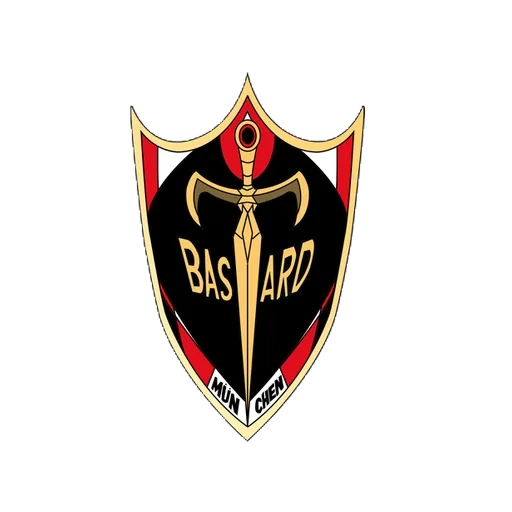
05 CH 03 // Effectifs et identitésClubs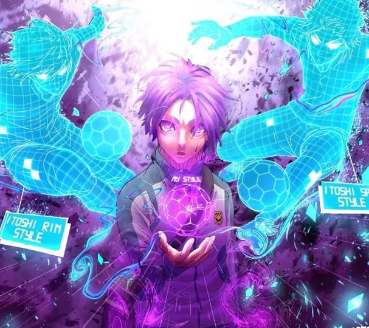
CH 04 // Cotes en ¥Valeurs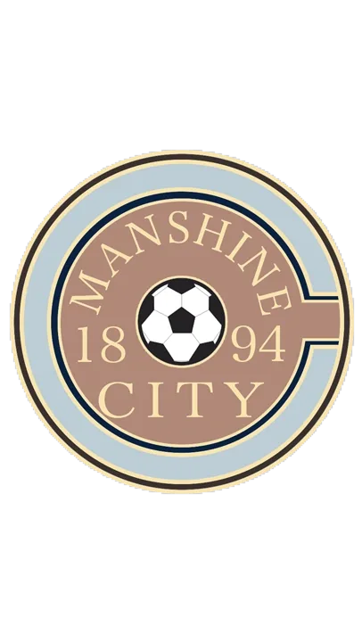
CH 05 // Chaque scoreMatchs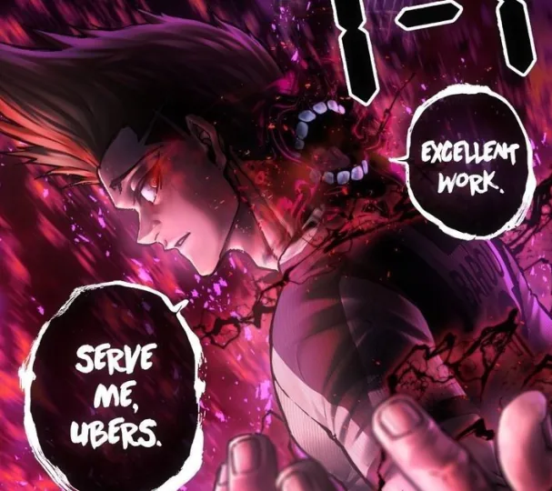
CH 06 // Ce qui resteRecords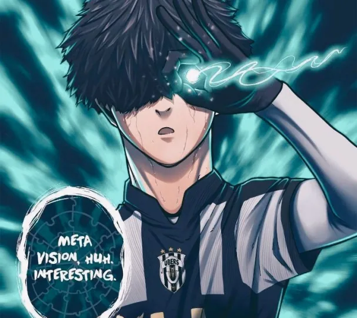
CH 07 // Cadre officielRègles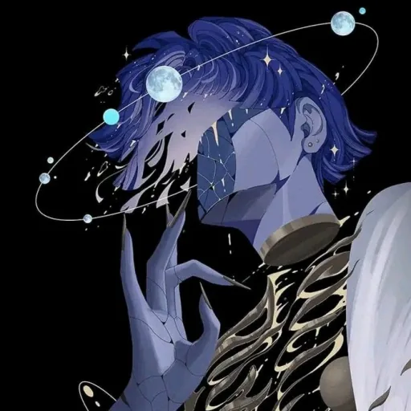
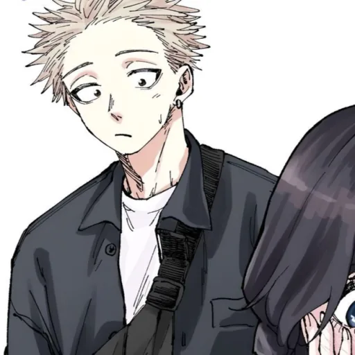
CH 08 // Clubs et joueursFace à face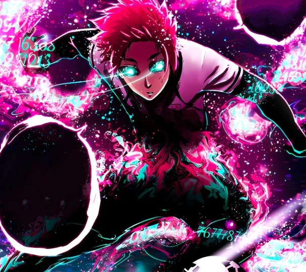
CH 10 // Prochaines rencontresCalendrier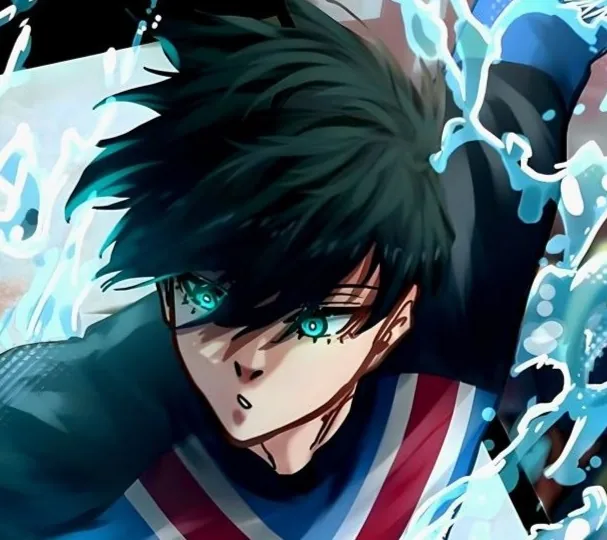
CH 11 // Chaque match compteProgression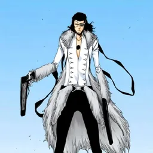
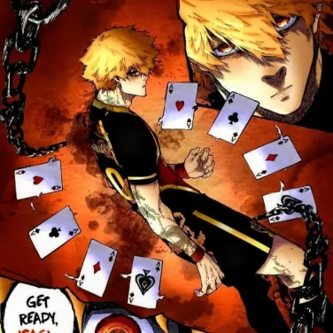
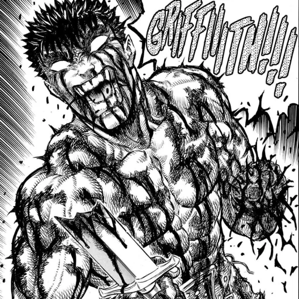
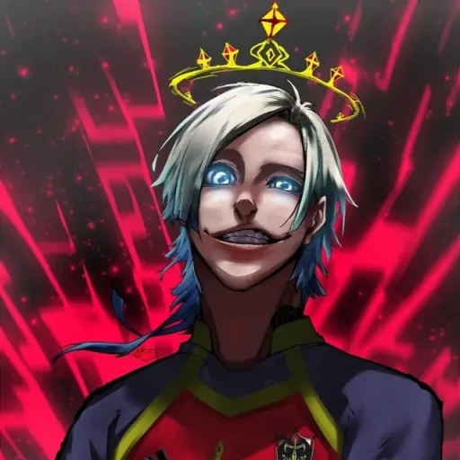
CH 12 // La sélection qui domineÉquipes idéalesREC CAM 13 // VESTIAIRE — FIN DE TRANSMISSION
Ton ego.
Ta trace.
Rejoins le serveur, entre sur le terrain et transforme chaque action en donnée permanente dans l’histoire de la Nebula League. Il n’y a qu’une place de numéro 1.